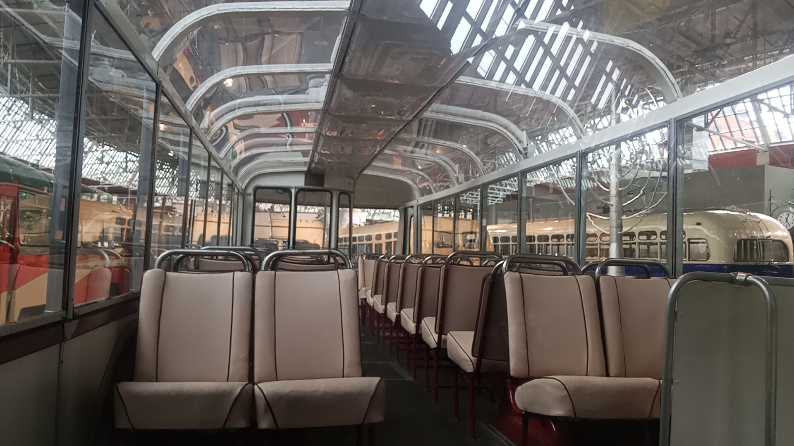
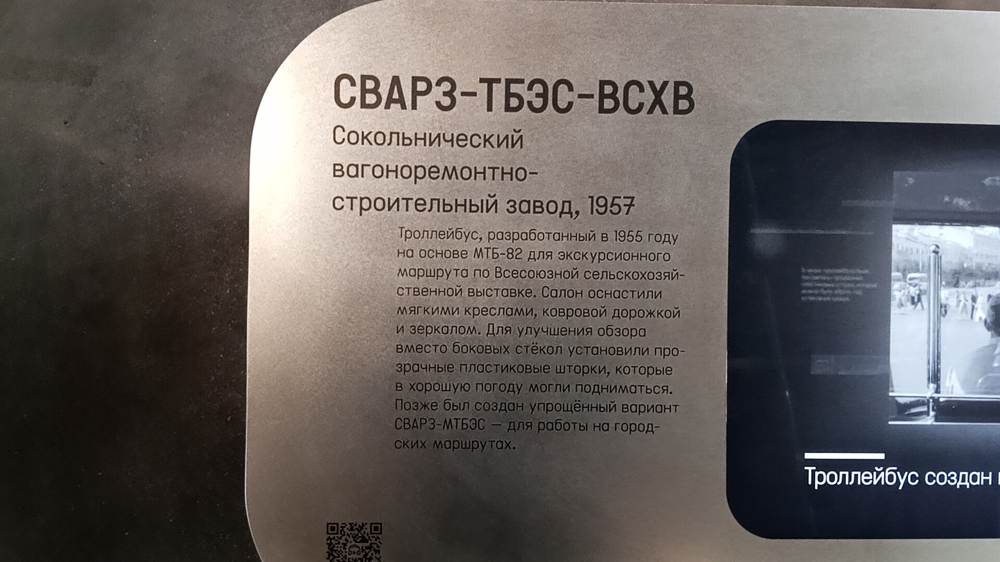
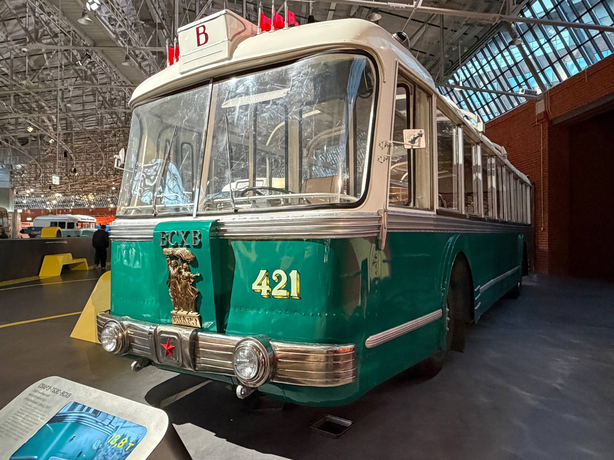

СВАРЗ ТБЭС №421
ТБЭС (троллейбус, бесшумный, экскурсионный, сочленённый) — уникальный пассажирский троллейбус, выпущенный на Сокольническом вагоноремонтном заводе (СВАРЗ) в 1957 году.
После списания машина долгое время использовалась в качестве бытовки, но в 1991–1999 годах была восстановлена на СВАРЗе и стала музейным экспонатом.
Общая информация
| Параметр | Значение |
|---|---|
| Город | Москва 🇷🇺 |
| Депо/Парк | Музей транспорта Москвы |
| Модель | СВАРЗ ТБЭС |
| Построен | 1957 |
| Заводской № | 24 |
| Текущее состояние | Не эксплуатируется |
| Назначение | Музейный |
История
Постройка
Троллейбус построен на Сокольническом вагоноремонтном заводе (СВАРЗ).
Эксплуатация
Работал в Москве. После списания использовался в качестве бытовки.
В процессе реставрации
Троллейбус находился на Сокольническом вагоноремонтно-строительном заводе (СВАРЗ). Фото: И.В. Костюхин.
Восстановление завершено
Восстановлен на СВАРЗе и передан в Музей городского пассажирского транспорта.
Трамвайно-ремонтный завод (ТРЗ)
На музейной площадке ТРЗ.
Парад к юбилею МТрЗ
Участие в параде на территории Трамвайного депо имени Н.Э. Баумана (музейная площадка).
Сокольнический вагоноремонтно-строительный завод (СВАРЗ)
На территории завода.
Парад к 75-летию троллейбуса
Улица Неверовского. Едет в ФАТП после парада.
ВВЦ, площадь у Главного входа
Выставка ретротехники.
ВДНХ
Участие в выставке ЭкспоСитиТранс — 2012.
Лужники
Выставка ретротехники к 55-летию ГУП «Мосгортранс».
Парад к 80-летию троллейбуса
Кремлёвская набережная — Боровицкая площадь.
Парад к 81-летию троллейбуса
Тверская улица — улица Охотный Ряд.
Парад к 82-летию троллейбуса
Лужнецкая набережная.
Музей «Московский Транспорт»
Улица Рогожский Вал, 9/2.
Парад к 83-летию троллейбуса
Большая Дорогомиловская улица.
Выставка в Санкт-Петербурге
Биржевая площадь. Выставка к 80-летию со дня открытия троллейбусного движения в Санкт-Петербурге.
8-й троллейбусный парк
Площадка «Нагатинская». XXXVIII конкурс профессионального мастерства водителей троллейбусов.
ВДНХ, павильон №75
Экспонат выставки «Урбан-транспорт — 2017».
V Петербургский парад ретротранспорта
Санкт-Петербург, Площадь Белинского.
В составе Музея Транспорта Москвы
Экспонат передан в Музей Транспорта Москвы.
Фотогалерея

📌 Музей Транспорта Москвы.
Общий вид троллейбуса в экспозиции.

📌 Музей Транспорта Москвы.
Салон, вид вперед

📌 Музей Транспорта Москвы.
Музейная информация о модели.

📌 Музей Транспорта Москвы.
Другой ракурс в экспозиции.
Нажмите на фото для увеличения
«СВАРЗ ТБЭС — это уникальный пример того, как машина, казалось бы, навсегда утраченная для истории, была возвращена к жизни усилиями реставраторов и теперь радует посетителей музея».